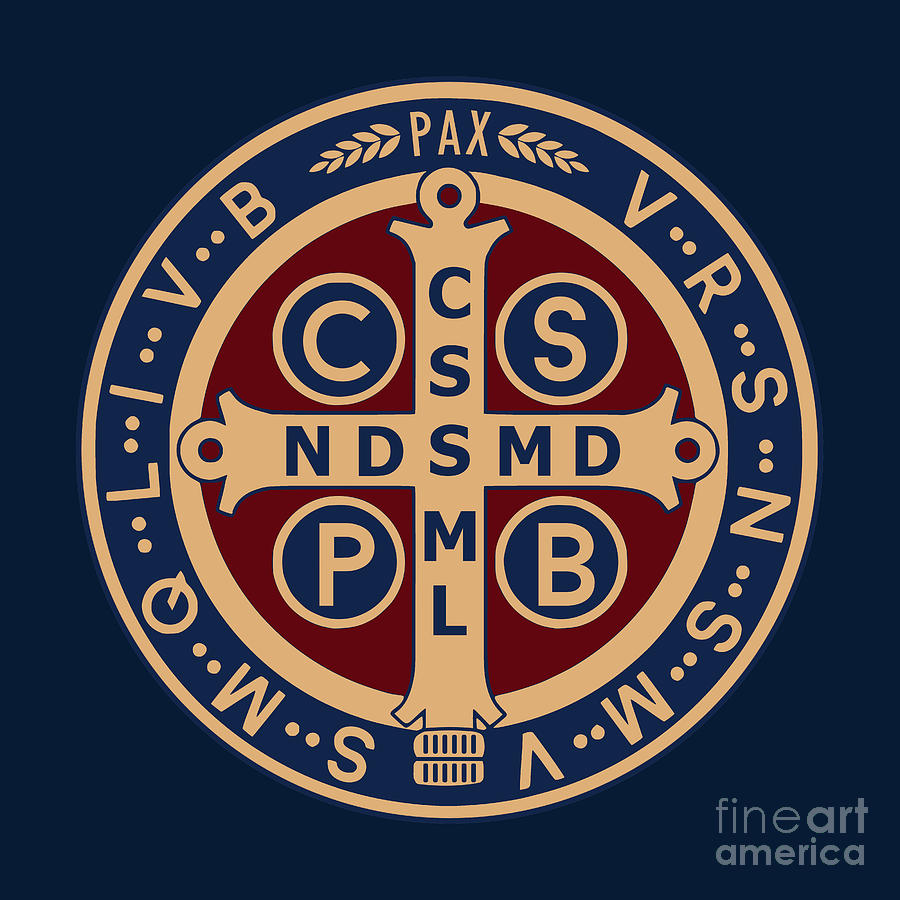
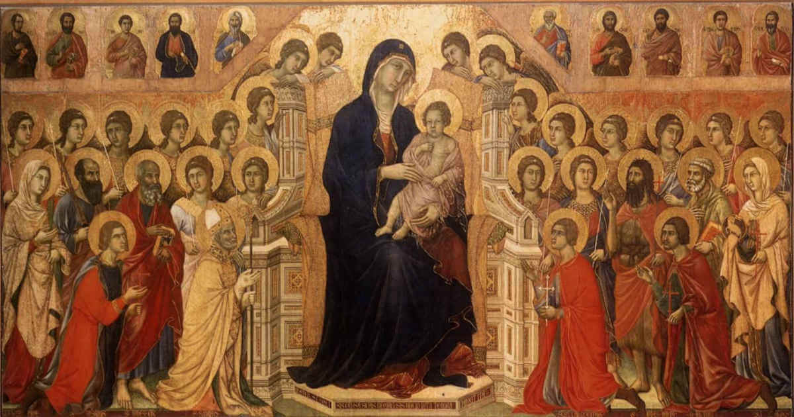
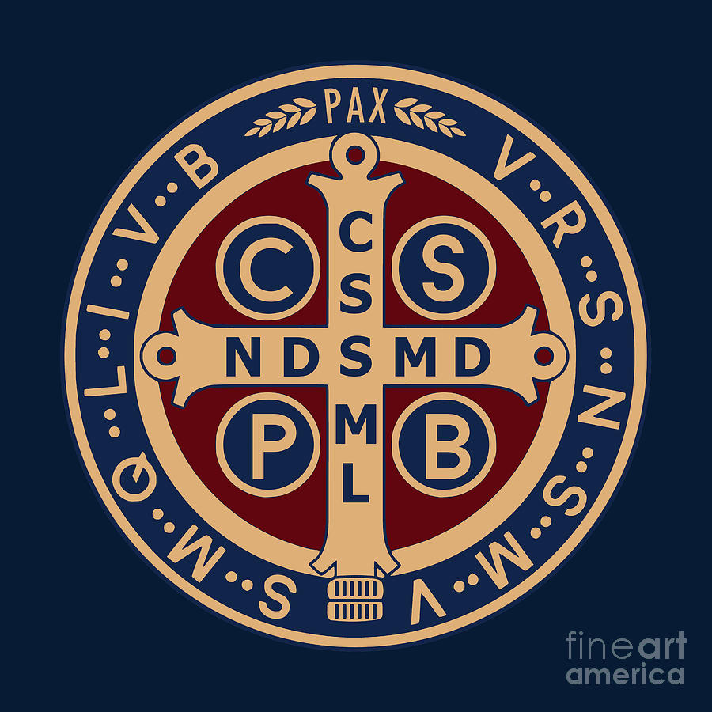
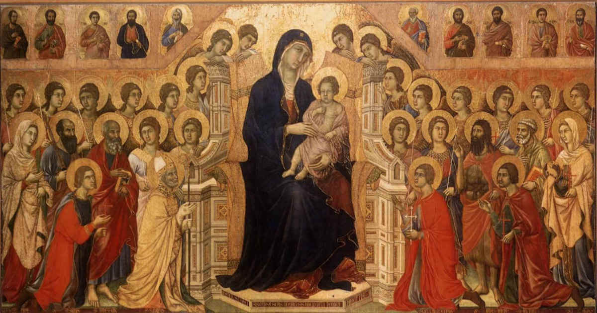

🅿🆁🅰🆈 🅵🅾🆁 🆄🆂, 🅾 🅷🅾🅻🆈 🅼🅾🆃🅷🅴🆁 🅾🅵 🅶🅾🅳, 🆃🅷🅰🆃 🆆🅴 🅼🅰🆈 🅱🅴 🅼🅰🅳🅴 🆆🅾🆁🆃🅷🆈 🅾🅵 🆃🅷🅴 🅿🆁🅾🅼🅸🆂🅴🆂 🅾🅵 🅲🅷🆁🅸🆂🆃
Catholic Movies
 Prayer Database
 RCIA Videos
RCIA Videos
 Saints Database
 Rosaries
Rosaries
Watch movies made on Catholicism.
 Prayer Database
Search the huge database of prayers that were compiled for you.
RCIA Videos
If you want to become a Catholic and have no means to enroll for RCIA in your country then you can go through the videos from here.
 Saints Database
Browse through the huge database of saints and learn about their Christ like lives
Rosaries
Pray the Catholic Rosaries.